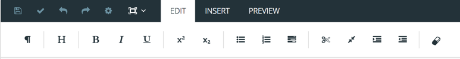
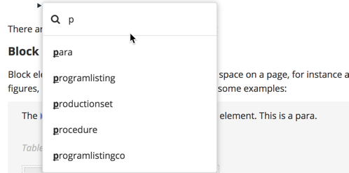
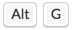
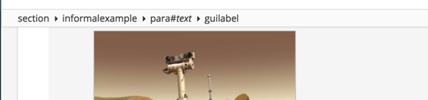

The (Not Quite) Elementary Basics
Ok, bad pun intended... ;-)
Even though Paligo is made to make it as easy as possible, there are a few things that are useful to get the hang of initially to work with structured authoring and XML.
But it's a short learning curve, and well worth it to achieve the efficiency, quality, reuse of content, and savings in the long run. So stick with it, and very soon you'll be so used to it it's second nature, and you'll start to see that you can actually author faster than you did in any other environment.
Note
Part of this topic is a bit theoretical, and if you prefer to just dive in and start writing topics or fiddle with some of the example topics, feel free to do so, you can always come back to this!
However, the first part about "Creating Elements" will be very useful to check out even if you're eager to get going!
Just like topics are the building blocks of the entire publication (like sections), elements are the smallest building blocks making up those topics.
The elements are "XML" elements (similar to HTML, but much more powerful). You don't have to learn XML to use Paligo, but a few basics about the element structure that make up Structured Authoring can be good to at least get a taste of.
There are many ways to work with content using elements in Paligo:
When you write XML content, you are actually creating elements. But to a great extent, Paligo is made to make creating these elements feel just the same as authoring in a Word processor.
The easiest way to create elements is perhaps the toolbar, where many of the common elements are found. Just put the cursor where you want it and click the icon for what you need, like a list or a paragraph:
 Often, when you just need a new paragraph when you are already in one, just hit Enter to get another paragraph. This actually creates a new
paraelement, but it feels the same as it would in any word processor.You also have keyboard shortcuts for many of them. For instance, to create a note, just hit Alt+Shift+N. You'll find the full list in the online help.
Last, but definitely not least, you have the Element Context Menu. Just hit Alt+Enter.This will give you each and every element available. Quite a long list, but you can easily narrow it down by starting to type the name of the element.

There are "block" elements and "inline" elements:
Block Elements
Block elements are elements that take up vertical space on a page, for instance a paragraph. Other block elements are tables, figures, procedures, lists, examples, etc. Here are some examples:
The para (for paragraph) element is a block element. This is a para.
Header | Header |
|---|---|
Text in first row | Text in first row |
Text in second row | Text in second row |
This figure is a block element.
This list is a block element too:
First
Second
Third
Note
And finally, besides this note being a block element, notice also that all of these examples are in an...example. (In this case to be more exact, an informalexample)
This is a block element too, and it shows that one block element can be nested (wrapped) in another block element.
Inline Elements
Inline elements are the type of elements that only occur in line with running text, like bold, italic, footnote symbols, etc. Here are some examples:
You an use all the familiar inline formatting elements, like bold, italic, underline. While you can create the elements using the Element Context menu, it is of course easier to just use keyboard shortcuts, just the same ones you're probably familiar with.
You can also use shortcuts to create some specialized inline elements like guilabel - to indicate something that is part of a user interface. Use Alt+G for that. BTW, the keyboard shortcuts were tagged too, as you can see, with the keycap inline element.
By tagging for instance software gui terms with the keycap element instead of just bold or italic or whatever, you can have full control to change the appearance of all those terms at any time. Like having it come out like this: . The example to show this is by the way another inline element - an inlineimage, used for small images like icons. And so was the mention of the element name - a tag element.
Just put your cursor in any of the inline elements, and you'll see it in the Structure Menu:
|  |